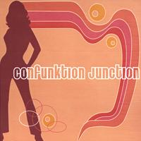

Sunny Daze is the Acid Jazz/Funk/Latin band I played in from 2001-2007. The band continues to perform around the Jersey shore scene. During my tenure, we recorded three CDs. You can check out the Sunny Daze recordings on CD Baby.

I also used to perform with a great soul/funk band called Confunktion Junction. I joined in October 2002 and the band fizzled out in early 2007. We recorded an EP of our original material. Check out the Confunktion Junction EP on CD Baby.